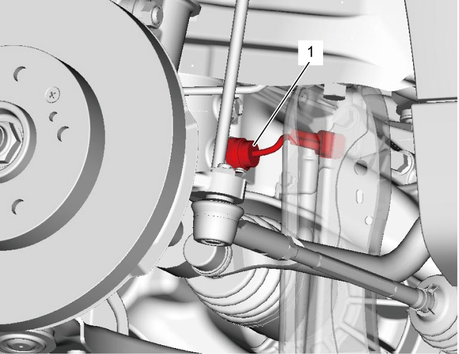

5B
Neutral Position Switch Removal and Installation (If Equipped)
Reference: Neutral Position Switch On-Vehicle Inspection (If Equipped):D16AA-6M/T Model
Removal
1)
Disconnect neutral position switch connector.
2)
Remove neutral position switch (1).

Installation
Reverse removal procedure noting the following points.
•
Install new neutral position switch.
•
Tighten neutral position switch to specified torque.
Tightening torque
Neutral position switch: 23 N·m (2.3 kgf-m, 17.0 lbf-ft)

 "Expand image")